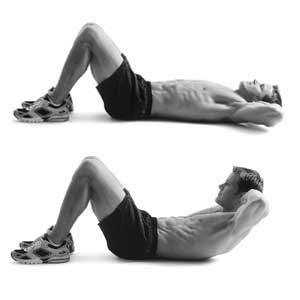
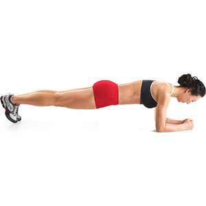
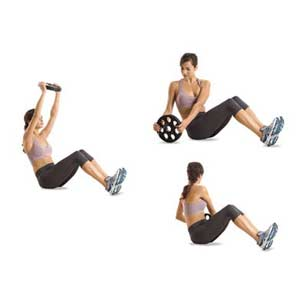

Core training is essential when it comes to working out, the core supports most of the body when you're lifting. There are more muscles in the core than abs. Some of the exercises for the core will train the deeper muscles in the core, here are a few
Crunches - lay down on the floor facing upwards, bend your knees to a 90 degree angle, place your hands behind your head without locking them together, press your lower back into the ground, lifting your shoulders at the same time until they're roughly 5 inches off the ground
Plank - place your elbows on the ground, shoulder width apart with your palms on the ground. Raise yourself into a position similar to the pushup position, tense your core muscles and hold the position for as long as you can
Weighted side twists - hold a plate roughly a foot away from your chest, pull down using your elbows to twist your body side to side for as long as you can
